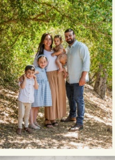
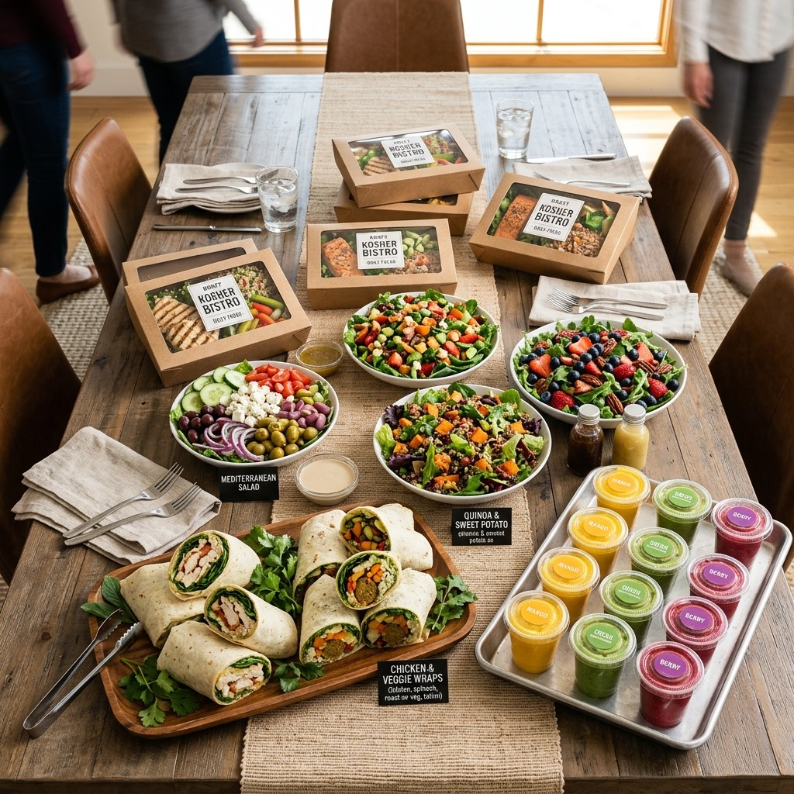

Wake up.
Hatch.
Smile. Repeat.
Feel-Good Fuel
A family-run, certified-kosher kitchen on Pico Blvd serving rotisserie chicken, breakfast wraps, superfood smoothies and coffee — built for the grab-and-go, stay-and-savor crowd of West LA.
A rotisserie built by a Pico‑Robertson family, for the Pico‑Robertson family.
We're the Adivis — lifelong Pico‑Robertson locals who wanted what every busy household wants: easy access to feel-good fuel, without the additives and compromises that usually come with "convenient."
Chef Elan brings over a decade of experience across fine dining and fast casual to a kitchen built around one idea — that quick-service kosher food can still be ethically sourced, nutrient-dense, and genuinely craveable. We're not chasing perfect. We're chasing good, every single day, for the neighborhood that raised us.

Certified kosher
Our kitchen is certified by OK Kosher — from the rotisserie to the smoothie bar.
Ethically sourced
High standards for ingredient cleanliness, animal welfare and supply-chain ethics. Organic where available.
Sustainably packaged
Every box, cup and container is 100% compostable. We pledge to make convenience kinder.
Rooted in the neighborhood
Family-run on Pico Blvd, built for the people who live, work and daven right here.
Four ways to feel good today.
From the rotisserie to the smoothie bar, every menu is built fresh daily — grab it to go, or stay and let the neighborhood come to you.

The bird the whole kitchen is built around.
Whole Rotisserie Chicken — Family Meal
24-hour brined in our signature spice blend, slow-turned until the skin shatters and the meat falls apart. The Family Meal feeds 3–4: a whole bird (whole or quartered), rotisserie potato wedges, side salad, rice, your choice of one more side, four fresh pita pockets and our signature sauces.
$69.00 · Feeds 3–4Feeding your office, your simcha, or the whole bunk.
Salad bowls and wrap platters for the office. Boxed lunches for a meeting that can't wait. Smoothie trays for the party. And a standing summer camp lunch program built for parents who'd rather not pack one more lunch tonight.

Looking for kosher food near Pico-Robertson?
Straight answers for neighbors searching nearby, planning Shabbat, or ordering lunch in West LA.
What is Hatch Kitchen?
Hatch Kitchen is a family-run, OK Kosher certified restaurant at 8947 West Pico Boulevard in Pico-Robertson, Los Angeles. We serve rotisserie chicken, breakfast wraps, salads, superfood smoothies, and coffee for dine-in, pickup, and delivery across nearby West LA neighborhoods.
Where can I get kosher rotisserie chicken near me?
Visit Hatch Kitchen on Pico Blvd (ZIP 90035), a short hop from Beverly Hills, Century City, Culver City, and West Hollywood. Open Sunday through Thursday 9AM to 8PM and Friday 9AM to 3PM. Closed Saturday. Call (424) 455-3195 or order online.
Do you cater kosher events in West LA?
Yes. We build kosher catering for offices, simchas, schools, and summer camps: boxed lunches, salad bowls, rotisserie platters, smoothie trays, and a standing camp lunch program. Email info@thehatchkitchen.com with your date and headcount.
Neighborhood keywords we answer for
Kosher restaurant Pico-Robertson, kosher breakfast Los Angeles, healthy kosher cafe near me, OK Kosher Pico Blvd, kosher catering Beverly Hills / Century City, kosher camp lunches LA, and feel-good fuel for the Pico-Robertson community.
8947 West Pico Boulevard
Los Angeles, CA 90035 · Pico-Robertson
| Sunday – Thursday | 9:00 AM – 8:00 PM |
| Friday | 9:00 AM – 3:00 PM |
| Saturday | Closed |